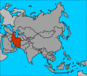

De: La Frikipedia, la enciclopedia extremadamente seria.
De: La Frikipedia, la enciclopedia extremadamente seria. De: La Frikipedia, la enciclopedia extremadamente seria.
«Ellos se Irán»
~ El novio asiático de chavez viendo el ejercito estadounidense
| De la serie Países del planeta tierra: | |||||
| Reputa Islámica de Irán | |||||
|---|---|---|---|---|---|
| |||||
| Lema: Yo también tengo derecho a tener armas nucleares | |||||
| Himno: Irán o regresarán
| |||||
| 
| |||||
| Capital | Teherán | ||||
| Mayor ciudad | Una planta Nuclear | ||||
| Lenguas oficiales | Persa | ||||
| Gobierno | Islámico Nuclear | ||||
| Alá | Mamut Ahmabenuclear | ||||
| Área | Asia | ||||
| Población | 64,000,000 hab. y 50,000,000 armas nucleares | ||||
| Moneda | Petroeuro | ||||
| Zona horaria | GMT+05 mesquitas | ||||
| Dominio Internet | .DWI | ||||
| Código telefónico | 00destrución
| ||||
| en 2012 se adueñaran de Israel | |||||
«El que es asesinado, ¡Es porque un ano macho a violado!»
~ Cancion para niños concientizandolos sobre la homosexualidad
«Miren un Israelí ¡Negroo!»
~ Cualquier iraní viendo el ejercito israelí
La Reputa Islámica de Irán (En terrorista:הזונה של איראן האסלאמית)es el principal refugio de terroristas (En 2do lugar esta Irak y en el 3ro Gringolandia, aunque digan lo contrario) donde les gusta golpear mujeres y hablar árabe, persa y árabe otra vez. comparte fronteras con España, Logroño y Dinamarca. Son conocidos porque Yisus los odia y los maldice por no ser cristianos porque a nadie le importa el islamismo.
Aragorn lo popularizó en una película donde hacía el papel de mamporrero de caballos (¿o era Iraq?).
Un grupo de nómadas bereberes se paró en el vasto desierto iraní (nota del traductor: el que escribió este artículo tenía un C.I. de 38 puntos) cuando sus camellos necesitaron que le hicieran tocamientos impuros. Al finalizar su tarea, los bereberes encontraron cómodo el sitio, y ya se quedaron allí para siempre, criando a sus hijos y a los hijos de sus hijos, y a los hijos de los hijos de los camellos. Este hecho motiva la festividad del Día de la Patria, donde los adolescentes deben tirarse a un camello como rito para demostrar que han pasado de la niñez a la madurez.
Las constantes picaduras de escorpiones que recibían (y reciben) los iraníes, especialmente en sus partes pudendas, los convierte en unos seres resignados ante la fatalidad y estoicos ante las penurias. Hasta que les tocan el sitio donde les pican los escorpinoes, como hizo San Saddam Hussein, patrón de las bromas pesadas, que invadió el país con 10 millones de soldados por pura risa y la lió parda. Menos mal que la cosa se arregló en sólo 8 años y apenas murió un millón de personas.
Después de eso, el famoso humorista americano George W. Bush dijo que Irán formaba parte del "Eje del mal" y que un día se le iba a escapar la mano. Por un problema de traducción, entendieron que había dicho que iban a defender la libertad y la democracia a hostia limpia y el gobierno iraní decidió tener la bomba atómica. Y ya que estaban, en vez de una, pues varias. Después de eso, enviaron un telegrama a Bush que decía:
"Te esperamos con los brazos abiertos, machote. Ven cuando quieras."
Aún no ha ido. Tampoco se le espera.
El resto de la historia de Irán es confusa, pero se cree que allí está El Chupacabras.
Destaca por su frondosa vegetación de color marrón. Las personas suelen confundir debido a esto sus paisajes por desérticos, pero todo el mundo sabe que el coeficiente mental medio de los humanos es de 50 puntos.
Irán está gobernado por un conjunto de monjes budistas cabreados que se han convertido al islam, llamado El Consejo. Estos, debido a su furia, se dedican a putear a las mujeres y a los judíos. El Consejo se asegura de que, en las elecciones celebradas cada 20 años, los ciudadanos elijan a su futuro gobernante correcto.
Hay dos tendencias políticas fundamentales en Irán: La Derecha (los llamados talibanes) y la Ultraderecha (formada por los ayatollah, como Carod-Rovira. La minoría de izquierdas fue suprimida a instancias del Consejo en el año 4 a.C.
Su principal fuente de ingresos reside en la exportación de alfombras tan exageradamente mullidas que, si saltas de un trampolín sobre ellas, todavía de da para bucear un rato. ¡Ah! Y las miguitas de lo que comen en el paraíso, los pistachos (¡ay, ama, qué rico!).
Cabe destacar también los ingresos derivados del top manta por Oriente Medio. Se le han impuesto sanciones internacionles por ello y consejo de la ONU quiere bombardear con misiles nucleares España a fin de exterminar a este defensor de los derechos de autor.
El principal deporte de Irán es una actividad llamada "Tiro al niño"donde le tenes que pegarle un tiro a un niño y dejarlo sangriento;Luego tenes 2 opciones:
Lo creas o no tiene reglas como por ejemplo no disparar antes de los 3 segundos porque sino el niño se echa a perder y te iras al infierno junto con Justin Gayber. Cambien tienen su propia selección de fútbol que esta conformada con 4 terroristas, 3 islams y 4 busca pleitos, nunca han ganado una Copa del Mundo pero gracias al Osama Bin Laden ganaron una Copa nosequé en el 8 de nosequé.
La toponomia es el estudio de los topos (Huy!!pagina equivocada). El nombre de Irán significa "Nazi" o mas específicamente "ario" por lo tanto Irán significa "Nazis de los Arios" o "Tierra de los Nazis" aunque la mayoría de la población es mestiza y hay judíos que se ocultan de bombas. Hay una teoría que cuando invadieron la "Meposotamia"el militar Juanito Alcachofa dijo "Ya se IRÁN" y de hay salió el nombre.
| |
|---|
| Arabia Saudita • Azerbaiyán • Bahrein • Bangladesh • Bután • Birmania • Brunéi • Camboya • Emiratos Árabes • Indonesia • Jordania • Kuwait • Kirguistán • Maldivas • Nepal • Omán • Qatar • Singapur • Sri Lanka • Tayikistán • Timor Oriental • Yemen |
Autor(es):